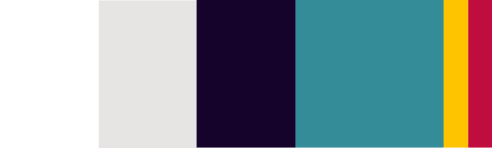
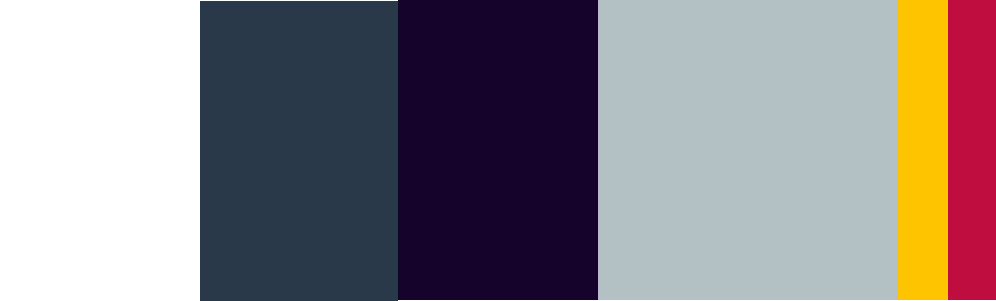

Colors & Animation
visit site ➔Color Palette
The color palette consists of three primary colors: white, a cold beige and a dark purple. The secondary color is a blue with low saturation. The accents consist of a light yellow and a dark pink. To pair the colors, color contrasts and color harmonies was used. The dark purple and white color creates a dark/light contrast. The blue and yellow makes a complimentary color contrast while yellow, pink, and blue are a triadic color harmony. The accessibility of the color palette was tested before it was implemented on the website.
Dark theme
To keep the visual identity the dark theme consists of almost the same colors as the light theme. One of the primary colors is replaced with a darker blue with low saturation. The secondary color is a blue but with very low saturation making it almost grey. The low and high values of this palette create a nice contrast.
Animations
The graphic in the header was given an infinite scale animation that scales from its original size to a little bigger which creates a pulse like movement. It was done using WAAPI. A scroll animation was added to the product section. At the start the content in the section is hidden. Once the user scrolls down to the contents it appears from the side and reveals itself.